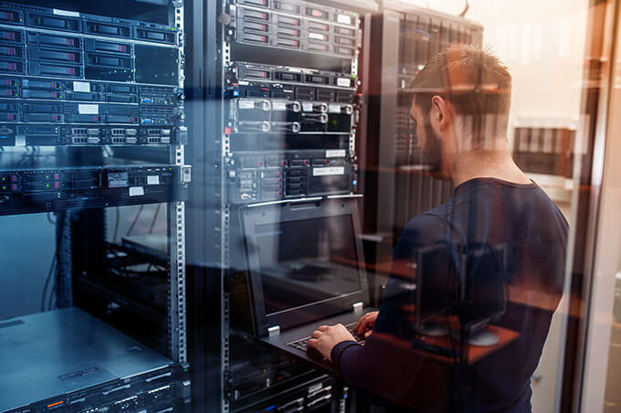

C'est quoi un Administrateur Système ??
Un administrateur système (souvent appelé "sysadmin") est un professionnel
clé dans le domaine de l'informatique, responsable de la gestion et de la maintenance
des systèmes informatiques d'une organisation.
Ce rôle englobe une variété de tâches techniques
et stratégiques, visant à garantir que les systèmes et les réseaux fonctionnent de manière optimale,
sécurisée et continue.
Les administrateurs systèmes sont essentiels pour la stabilité et la performance
des infrastructures informatiques sur lesquelles reposent les opérations quotidiennes des entreprises.
Ses rôles
| Installation et Configuration des Systèmes | Maintenance et Supervision des Systèmes | Sécurité des Systèmes |
|  |  | |
| Mise en Place des Infrastructures : Installe et configure les serveurs, les systèmes d'exploitation (Windows, Linux, Unix, etc.), ainsi que les applications logicielles nécessaires. Il prépare également les machines physiques ou virtuelles pour l'utilisation par les utilisateurs finaux. | Surveillance des Performances : Utilise des outils de surveillance comme Nagios, Zabbix, ou Prometheus pour suivre l'état de santé des systèmes, identifier les problèmes de performance, et prendre des mesures préventives avant que les défaillances ne surviennent. | Protection Contre les Menaces : Configure des pare-feu, des systèmes de détection d'intrusion (IDS/IPS), des antivirus et d'autres mesures de sécurité pour protéger les systèmes contre les cyberattaques. |
Retour au sommaire